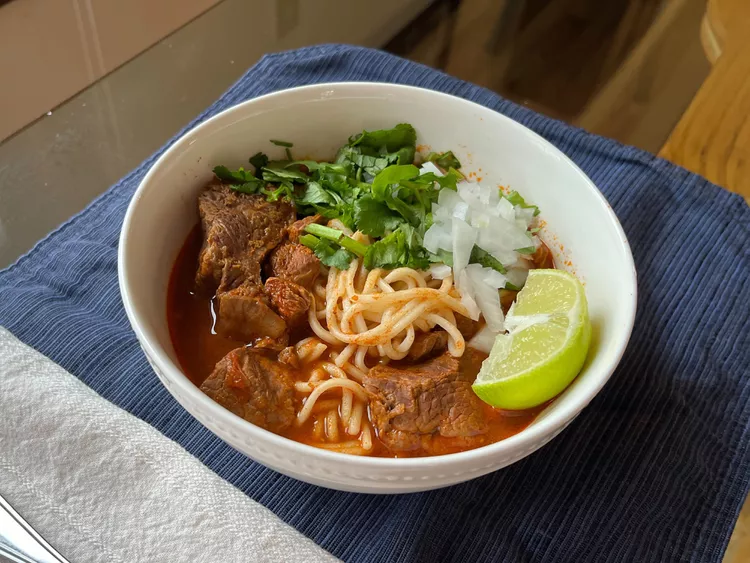

Prev
Home
Next
Beef Birria Ramen

Photo Courtesy of Gemma Garcia (allrecipes.com)
Mexican take on ramen. Confort dish that is satisfying with
every bite.
The recipe makes enough for 8 servings.
- 10 dried gualjillo chilies, seeded
- 4 dried de arbol chilies
- boiling water, as needed
- 1 tablespoon avocado oil or other cooking oil
- 1/2 white onion, roughly chopped
- 4 garlic cloves, crushed
- 6 roma tomatoes, roughly chopped
- 1 teaspoon whole black peppercorns
- 6 whole cloves
- 1 piece, 1/2-inch, dried ginger root
- 1/4 teaspoon cumin seeds
- 1 teaspoon fresh thyme
- 1/2 tablespoon dried marjoram
- 1/2 tablespoon dried Mexican oregano
- 1 tablespoon granulated chicken bouillion
- 2 tablespoons apple cider vinegar
- salt to taste
- 2 pounds beef chuck roast, cut into 1-inch pieces
- 2 beef shanks, cut into 1-inch pieces
- 2 beef short ribs
- 1-1/2 quarts beef stock
- 1 stick Ceylon cinnamon (2-1/2 inch)
- 1/2 white onion, cut into chunks
- 4 garlic cloves, crushed
- 2 bay leaves
- 8 servings fresh or dried Japanese ramen noodles (not instant ramen)
- 1 large white onion, finely chopped
- 1 bunch cilantro leaves, leaves chopped
- lime wedges
- For sauce base, first toast chilies: heat a dry griddle or
skillet over medium heat. Toast gualjillo chilies and chiles
de arbol, turning often, until fragrant and lightly browned,
being careful not to burn them. Place chilies in a bowl,
cover them with boiling water, and soak until reconstituted -
about 30 minutes.
- Meanwhile, heat oil over medium heat in a large pan. Add onion
and garlic; cook and stir until soft - about 5 minutes. Add
tomatoes and cook until they break down - about 5 minutes.
Let the mixture cool.
- Place peppercorns, cloves, dried ginger, cumin seeds, thyme,
marjoram, and oregano in a morter and grind into a fine mix.
- In a blender, combine soaked chilies, 1/4 cup of the chile
soaking liquid, onion-tomato mix, ground spices, chicken
bouillion, and apple cider vinegar. Blend until smooth. Add
a small amount of beef broth, if needed, for blending. Taste
sauce; season with salt.
- To cook meat, place chuck roast, beef shanks, and beef short
ribs in a large pot and pour the sauce over it. Add enough
beef broth to cover meat by about 1-inch, then stir to
combine. Bring to a boil over high heat, then add cinnamon
stick, onion, garlic, and bay leaves. Cover, reduce heat to
low, and simmer until meat is tender and falling apart - about
2-1/2 hours. Remove and discard short rib bones; skim fat
from surface of broth using a spoon. Reserve fat for another
use, such as quesabirrias. Taste broth; season with salt.
- Bring a large pot of salted water to a boil, add ramen, and
cook until tender - 7 to 20 minutes, or according to package
instructions. Drain; divide noodles into bowls.
- To assemble the dish, ladle birria and broth over ramen. Top
with chopped onion and cilantro. Serve with lime wedges.
:max_bytes(150000):strip_icc():format(webp)/8749389_Beef-Birria-Ramen_Gemma-Garcia_4x3-e083722c9b92432eb25bc160edb21676.jpg){kind=link}